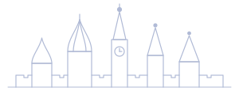
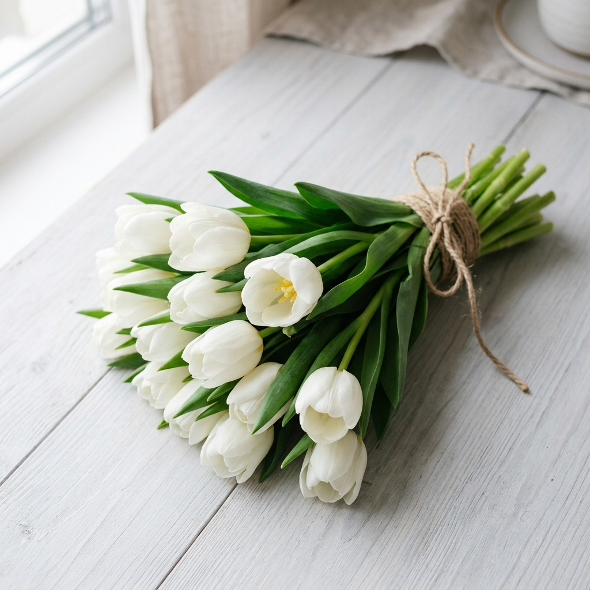

Orzularingiz
uchun bir qadam
oldinga! ♡
Kirish
Assalomu alaykum, aziz o‘quvchim!
Bu kitob siz uchun, rus tilini o‘rganishini chin dildan istaganlar uchun yozilgan.
Men — Фаёза Алишеровна, 10 yillik tajribaga ega rus tili ustoziman. Ushbu qo‘llanmada siz nafaqat grammatikani, balki hayotda kerak bo‘ladigan amaliy tilni ham o‘rganasiz.
Kitobning maqsadi — sizni 0 dan boshlab, erkin muloqot darajasigacha olib chiqish.
Har bir darsda:
- yangi so‘zlar
- grammatik tushuntirish
- amaliy mashqlar
- suhbat va matnlar
bor.
Siz bunga albatta erishasiz! Men sizga ishonaman!

Mundarija
У вас всё получится! ♡
| Какой у вас номер телефона? | — | Sizning telefon raqamingiz bormi? |
| Мне нравится … | — | Menga … yoqadi. |
| Я не понимаю. | — | Men tushunmayapman. |
| Повторите, пожалуйста. | — | Iltimos, takrorlang. |
| Где находится …? | — | … qayerda? |
| Сколько это стоит? | — | Bu qancha turadi? |
| Я хочу … | — | Men … xohlayman. |
| Можно мне …? | — | Menga … mumkinmi? |
yangi so'z! ♡
Rus tilida hozirgi zamon fe'llari shaxsga qarab o'zgaradi.
| Shaxs | Men (я) |
Sen (ты) |
U (он/она) |
Biz (мы) |
Siz (вы) |
Ular (они) |
|---|---|---|---|---|---|---|
| yozamiz (писать) |
пишу | пишешь | пишет | пишем | пишете | пишут |
| o'qiymiz (читать) |
читаю | читаешь | читает | читаем | читаете | читают |
Я студентка. Я учусь в университете. Мне нравится русский язык. Я хочу стать хорошим специалистом. Сейчас я готовлюсь к экзаменам. Учиться трудно, но я верю, что у меня всё получится.
«O'rganish hech qachon kech emas!»
Siz qila olasiz! ♡
Siz bu kitobni o‘qishingiz bilan o‘z orzularingizga bir qadam yaqinlashdingiz.

yangi imkoniyatlar
eshigi! ♡